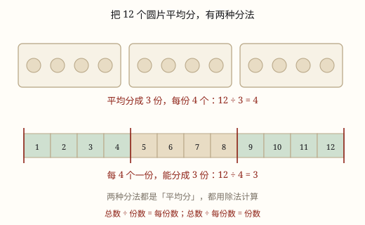

除法的初步认识（平均分）
把一些东西分成几份，每份同样多，叫平均分。平均分才能写成除法：12 支铅笔平均分成 3 份，每份 4 支，写作 12÷3=4。
| 所属主题 | 数的运算 |
|---|---|
| 所属模块 | 数与代数 |
| 课标学段 | 第一学段（1~2年级） |
| 前置知识 | 乘法的初步认识（几个几） |
| 核心素养 | 运算能力模型意识数感 |
教材定位
人民教育出版社《2024年版》
对应二上第 3 单元「1~6 的表内除法」：除法的初步认识与平均分。
课标要求
| 数与代数·数与运算 | 在具体情境中，了解四则运算的意义，感悟运算之间的关系（例3）。 印刷第 18 页 行为动词：了解 |
|---|---|
| 数与代数·数与运算 | 探索乘法和除法的算理与算法，会简单的整数乘除法。 印刷第 18 页 行为动词：掌握 |
说明
把 12 支铅笔分给 3 个同学，可以这样分：给第一个 5 支、第二个 4 支、第三个 3 支。这也叫「分成 3 份」，可三个人一定不高兴——凭什么他多我少？
换一种分法：每人先拿 1 支，再各拿 1 支，一轮一轮发下去，发完时每人都拿到 4 支。像这样每份分得同样多，就叫平均分。
平均分可以用除法记下来：12 ÷ 3 = 4，读作「12 除以 3 等于 4」。中间的「÷」叫除号。12 叫被除数（被分的总数），3 叫除数（分成几份），4 叫商（每份几个）。
平均分有两种问法，都用除法。第一种：知道分成几份，问每份几个——12 支平均分成 3 份，每份几支？12 ÷ 3 = 4。第二种：知道每份几个，问能分几份——12 支，每 4 支一份，能分几份？12 ÷ 4 = 3。
注意：不平均分，就写不出除法。三份分别是 5、4、3 时，「每份几个」这个问题有好几个答案，除法只能有一个答案，所以用不上。
使用场景
分东西吃：12 块饼干平均分给 4 个人，每人几块。
装袋装箱：18 个橘子，每袋装 6 个，能装几袋。
排队分组：24 人做游戏，每 6 人一组，能分成几组。
买东西算数量：带 20 元买 4 元一支的笔，能买几支——这是「每 4 元一份，能分几份」。
摆花盆：30 盆花平均摆在 5 个花坛里，每个花坛摆几盆。
注意点
每份必须同样多才叫平均分。分成 3 份，一份 5 个、一份 4 个、一份 3 个，不能写 12 ÷ 3，因为除法问的是「每份同样多时，每份是几」。
看清问的是「几份」还是「每份几个」。12 ÷ 3 和 12 ÷ 4 是两道不同的题，除数放错，答案的意思就变了。
被除数一定是总数。不管题目怎么问，先把「一共有多少」放在除号前面，别把每份数或份数放前面。
商后面要带单位，单位跟着问题走。问「每份几支」，商就是 4 支；问「能分几份」，商就是 3 份。

图 1：按份数分、按每份个数分，都是平均分
为什么是这样
算理推导
先看一个「不能写除法」的例子：12 支铅笔分给 3 个人，甲 5 支、乙 4 支、丙 3 支。5+4+3=12，总数一点不差，可分完三个人都不满意——这个分法根本没法用一个数说清「每人几支」。
换一种分法：每人先各拿 1 支，再各拿 1 支，一轮一轮地发，直到发完。每人都拿到 4 支。这时候「每人几支」只有一个答案：4。
除法的用处，就是把这个唯一的答案记下来：12 ÷ 3 = 4。如果每份不一样多，答案能有好几种写法（5、4、3 可以，6、4、2 也可以），除号后面就没法写一个确定的数——所以平均分是除法的前提，不是附加条件。
再想「12 支，每 4 支一份，能分几份」。一份一份地圈：4、8、12，圈了 3 次正好圈完。这也是平均分，只是问的话不一样，写成 12 ÷ 4 = 3。
两种问法其实是同一件事的两面：3 × 4 = 12 说的是「3 份、每份 4 个，合起来 12 个」；除法反过来问「12 个，按每份 4 个去分，能分成 3 份」。
动手实验
抓 12 颗棋子，真分两次。第一次随便分成 3 堆（一定不平均），把三堆各几个记下来，再重分一次，你会发现每次都不一样；第二次一颗一颗轮流发，三堆最后一样多。把两次结果都写在本子上，然后想一想：哪一次能用「12 ÷ 3」说清楚？为什么另一次不能？
按场景的例题
例 1（场景：校园生活） 老师给小组分发铅笔
老师把 18 支铅笔平均分给 3 个小组，每个小组分到几支？
解：把 18 平均分成 3 份：18 ÷ 3 = 6。验算：6 × 3 = 18，三份合起来正好 18 支。
答：每个小组 6 支。
例 2（场景：饮食与配比） 包饺子装盘
妈妈包了 24 个饺子，每盘放 6 个，能放几盘？
解：每 6 个算一份，看 24 里面有几个 6：24 ÷ 6 = 4。
答：能放 4 盘。
例 3（场景：绿化照明） 给校门口的花坛摆花
学校买了 20 盆花，平均摆在校门口的 4 个花坛里。每个花坛摆几盆？
解：把 20 平均分成 4 份：20 ÷ 4 = 5，口诀「四五二十」。
答：每个花坛摆 5 盆。
例 4（场景：购物消费） 在文具店买铅笔
一支铅笔 2 元，小丽带了 12 元，全买铅笔能买几支？
解：每 2 元算一份，看 12 里面有几个 2：12 ÷ 2 = 6。
答：能买 6 支。
常用推论
被除数 ÷ 除数 = 商；反过来 商 × 除数 = 被除数，所以分完可以用乘法检查对不对。
总数 ÷ 份数 = 每份数：把总数平均分成几份，商就是一份有多少。
总数 ÷ 每份数 = 份数：按每份多少去分，商就是能分成几份。
除数不能是 0：把 12 个东西「每 0 个一份」是分不出来的，所以除法算式里除数一定大于 0。
易错点
错12 支铅笔分成 3 堆，分别是 5 支、4 支、3 支，写成 12 ÷ 3 = 5。
为什么错这三份不一样多，不是平均分。商只能有一个答案，正因为每份同样多；不平均分时「每份几个」根本没有唯一答案。
正确要平均分才能写除法：每人 4 支，12 ÷ 3 = 4。
错18 个苹果平均放进 3 个盘子，列式 18 ÷ 6 = 3。
为什么错把要求的商（每盘几个）当成了除数。题目说的是「平均分成 3 份」，除数应该是 3，6 是待求的答案。
正确18 ÷ 3 = 6，每盘放 6 个。
错「20 个橘子，每 5 个装一袋，能装几袋」写成 5 ÷ 20。
为什么错被除数和除数颠倒了。被除数一定是被分的总数，除数才是「每份几个」。
正确总数在前：20 ÷ 5 = 4，能装 4 袋。
直观理解
平均分像切蛋糕分给一桌人。你可以切得一大一小，但只要有人拿到小的那块，这桌就要吵起来——所以蛋糕店都按人数切成一样大的块。除法记的就是「一样大的那块有多大」，或者「能切出几块」。切得不一样大，就没法用一个数回答，除法也就无从写起。
每份同样多，才叫平均分；总数除以份数，商是每份数。